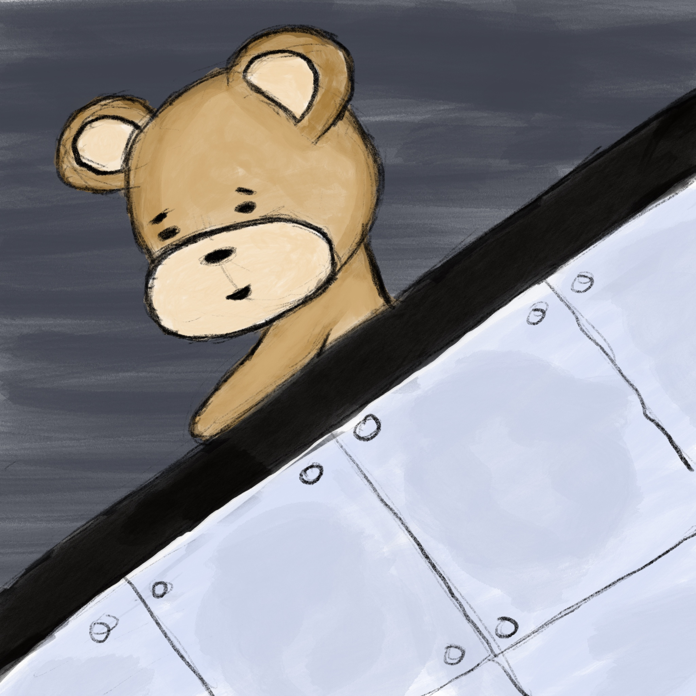
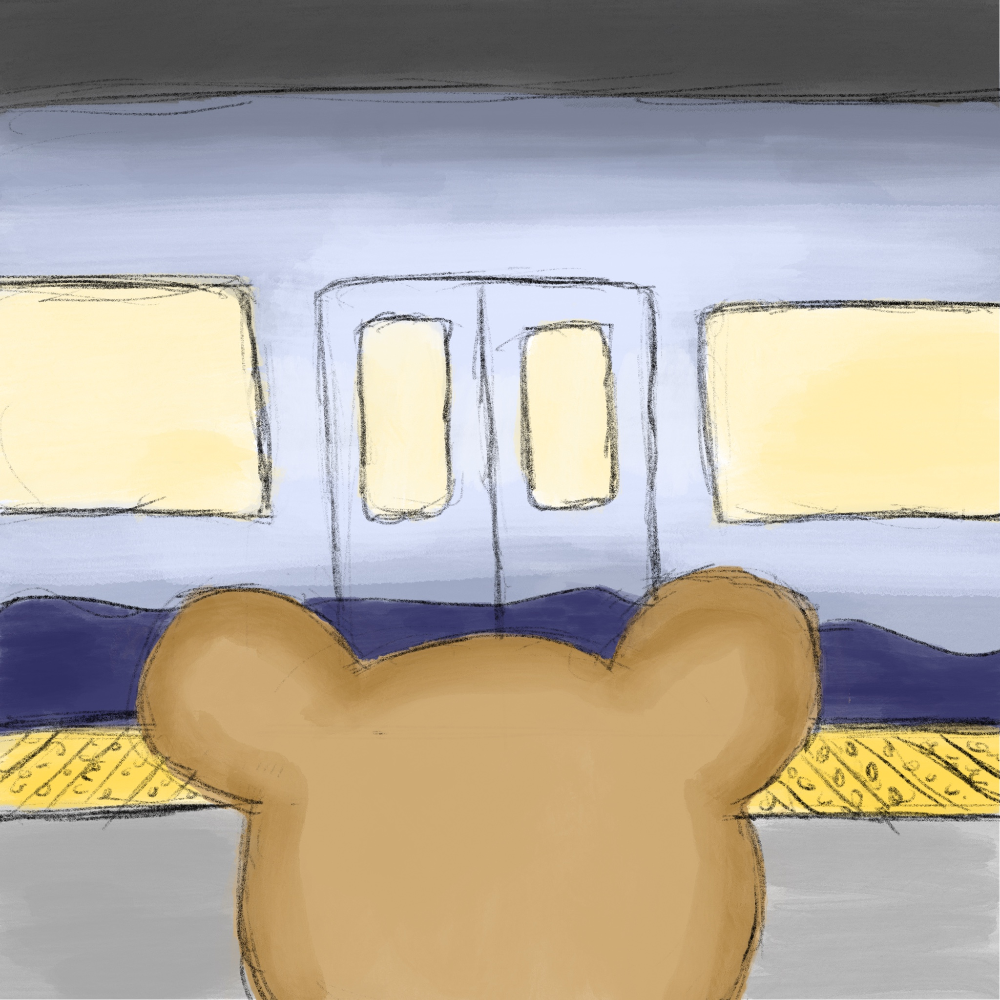
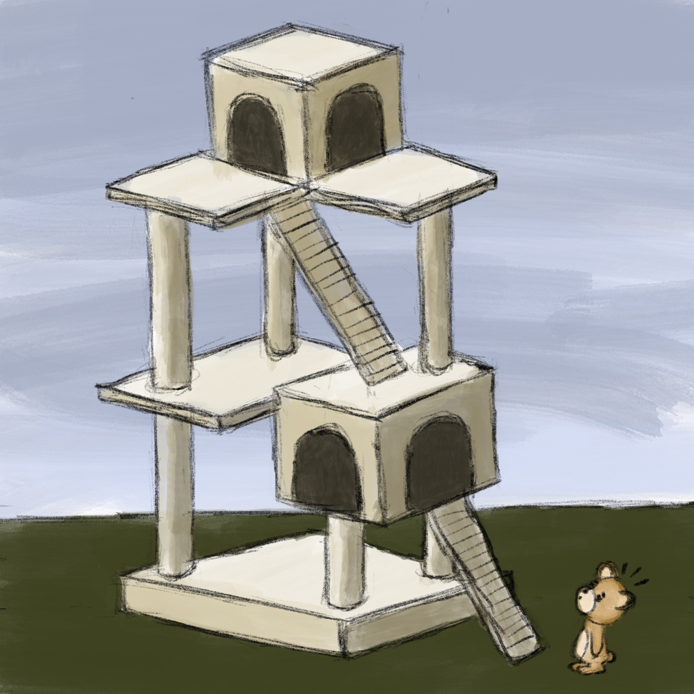

The bear decided to take the light rail to see his friends. As he went down into the station on the escalator, he felt the “whoosh” of the air from a train pulling into the station, which put a little smile on his face. “I so love the train,” he thought. #34

“The tricky thing about seeing Cooksie and Mr. Peanut,” he thought to himself as the train pulled into the station, “is remembering which one is which. It’s a good thing I like them both so much!” #35

While he had trouble telling them apart, he had no trouble at all recognizing their rather unique house. “The other tricky thing is getting to the front door!” #36